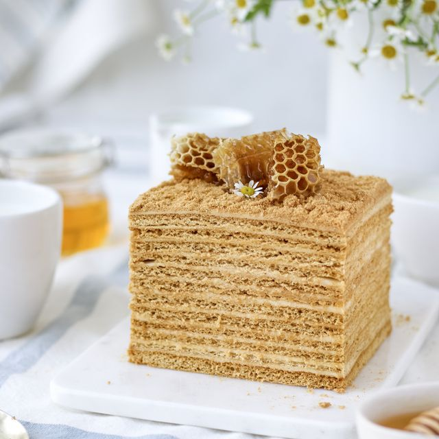

Торт "Медовик"

Інгредієнти:
- Яйця 2 шт.
- Цукор 3 ст. л
- Мед (рідкий) 3 ст. л.
- Сода харчова 1 дес. ложка
- Борошно 1,5-2 склянки
- Сметана жирністю 24% 600 г
- Цукрова пудра 0,5 стакана
Як приготувати:
- Почнемо з приготування тіста. Змішуємо яйця, цукор, рідкий мед до однорідного стану. У просіяне борошно додаємо соду.
- Рівномірно перемішуємо, і тісто готове. Виливаємо тісто в форму, покриту пергаментом, і випікаємо в розігрітій духовці при температурі 180 градусів 15-20 хвилин.
- Поки печеться Медовик, готуємо сметанний крем: збиваємо сметану і цукрову пудру. Медовий корж для торта трохи остудити, і поки теплий, розрізати на 3 частини.
- Промащуємо кремом коржі і боки медового торта. Торт Медовик зі сметанним кремом обсипаємо крихтою. Даємо просочитися хоча б 2-3 години!
Смачного
restaurant_menu